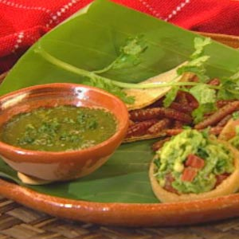
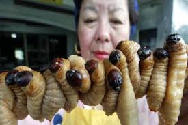
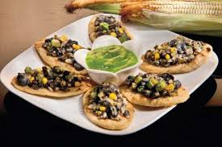
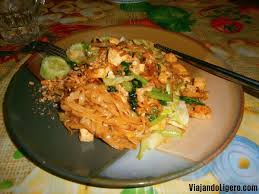

Aparentemente en este país africano es muy común consumir orugas y diversos insectos; sin embargo, el plato más conocido es este guiso.
Aparentemente en este país africano es muy común consumir orugas y diversos insectos; sin embargo, el plato más conocido es este guiso.
 En México las personas fríen los gusanos de maguey (amarillos y gorditos) con manteca y los sirven en tacos con salsa picante. Se dice que son deliciosos.
 En Indonesia los fríen en aceite hirviendo y los sirven como pasabolas.
 En México se comen los hongos del maíz como una delicia culinaria. Su único problema es la apariencia, porque de sabor parecen pasar la prueba.
Aparentemente en este país africano es muy común consumir orugas y diversos insectos; sin embargo, el plato más conocido es este guiso.
 Dicen que los grillos tienen un alto nivel de proteínas y bajo contenido en grasas saturadas, lo cual los hace muy saludables. Para preparar este plato, se cocinan estos insectos en el horno hasta que están crujientes y se los coloca luego en una taza con curry.